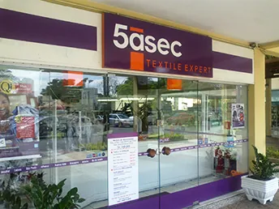

Center Shop Colina, Delivery, Lavanderias
5àsec
A 5àSec é uma rede de lojas especializada no tratamento de roupas, por meio de um sistema profissional de limpeza a seco, que utiliza equipamentos e produtos de alta tecnologia, sem… Ler mais
A 5àSec é uma rede de lojas especializada no tratamento de roupas, por meio de um sistema profissional de limpeza a seco, que utiliza equipamentos e produtos de alta tecnologia, sem qualquer prejuízo ao meio ambiente. Seus diferenciais, razão do sucesso internacional nos mais diversos tipos de mercados, estão centrados no atendimento ao cliente. Qualidade: as roupas entregues pelo cliente são lavadas a seco, passadas a frio e embaladas mecanicamente, garantindo uma qualidade permanente aos nossos serviços. Rapidez: o processo de tratamento de roupas a seco acontece em até 1 hora, disponibilizando ao cliente tempo livre para compras, passeios, trabalhos etc. Economia: apesar da alta tecnologia empregada e contrariando positivamente a expectativa do cliente, a rede 5àSec mantém uma política de preços baixos, propiciando economia permanente no tratamento das roupas. Modernidade: da concepção e localização da loja, até o treinamento e postura da equipe, a marca 5àSec está associada à praticidade e ao ritmo da vida urbana moderna. Satisfação: o atendimento das necessidades e a superação das expectativas do cliente geram satisfação e fidelidade à marca por parte do consumidor, permitindo a cada loja 5àSec operar dentro dos padrões de rentabilidade esperados.
- Endereço
- Center Shop Colina, de São Francisco, Av. Dr. Cândido Mota Filho, 545, Vila São Francisco - São Paulo/SP
- Telefones
- (11) 3765-2555